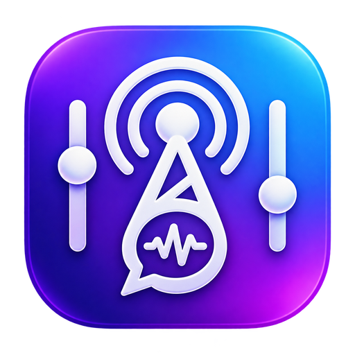

01 / COMMENTS⌁
流れるコメントを、
ひとつの場所で。
YouTube・Twitchなどのコメントをまとめて確認。初見・再訪の表示、名簿、NGフィルター、ログ保存を備えています。

CastPanelDESKTOP COMMENT VIEWERYOUR STREAM. YOUR PANEL.
コメントも、参加者も、配信の演出も。
必要なものをひとつにまとめて、
リスナーとの時間に、もっと集中。
Windows · macOS · Linux 向けビルド構成
現在開発中。配布状況はダウンロード欄で確認できます。
配信の裏側を、すっきり。
ひとつのタイムライン+参加型のフル管理+あなたらしいOBS表示BUILT AROUND YOUR STREAM
複数サービスの確認から、次の参加者の案内まで。
配信中の小さな手間を、ひとつずつ減らします。
YouTube・Twitchなどのコメントをまとめて確認。初見・再訪の表示、名簿、NGフィルター、ログ保存を備えています。
受付・待機列・回数上限・一括交代・取り消し。画像付きカードや通知音、最前面ミニ表示まで、参加型をフル管理。
コメント・参加者・投票・セットリストをブラウザソースへ。ドラッグで配置し、文字・色・サイズを調整できます。
15のテーマを下地に、配色や角丸・枠線・フォントを自由に編集。保存・複製・ファイル共有にも対応。
コメント・投票・演出・曲管理を別ウィンドウで開き、別モニターへ。読み上げや参加者管理の状態はひとつに同期します。
READY WHEN YOU ARE
いつもの配信に、CastPanelを追加するだけ。
配信URLやユーザー名を入力して接続。YouTubeのコメント取得にAPIキーは不要です。
読み上げ・ログ・名簿・OBS出力を枠ごとに切替。参加型のルールとテーマを設定します。
アプリの表示URLをブラウザソースへ。表示内容とレイアウトを確認したら準備完了です。
MAKE ROOM FOR YOUR STREAM
公開リリースを確認しています…
GitHub Releasesですべて見る ↗公開済みリリースに含まれるファイルだけをダウンロードできます。
サイトの表示は、各OSでの動作保証や全機能の検証完了を意味しません。
GOOD TO KNOW
YouTube Live・Twitchのコメント取得を実装しています。ツイキャスはDOM取得の試験実装です。サイト変更やログイン条件によって取得できない場合があり、各配信での確認が必要です。
受付ワード・待機列・同時プレイ人数・連続回数上限・交代・取り消し・ブラックリスト・履歴を備えています。フル管理ではカードデザイン・画像や音声の取込み・ホットキー・ミニ表示を利用できます。Twitchポイント受付には認証が必要です。
設定・名簿・ログはPC内に保存します。配信サイトとの通信、設定した外部音声エンジンや連携先との通信、GitHub Releasesの更新確認は別途行います。この配布サイトにコメントや名簿を送信する機能はありません。
GitHub Releasesからの更新確認・ダウンロード・再起動適用を実装しています。配布元のリリース設定・署名・更新メタデータの準備と、実際の配布版からの更新試験が必要です。
表示データは操作を試すためのサンプルです。HTML-in-Canvasに対応した環境ではHTMLをCanvasへ描画し、未対応の環境では同じHTMLで表示します。